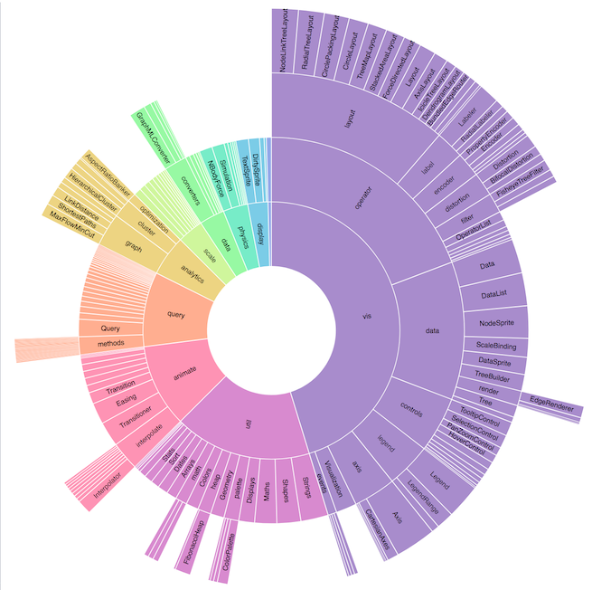
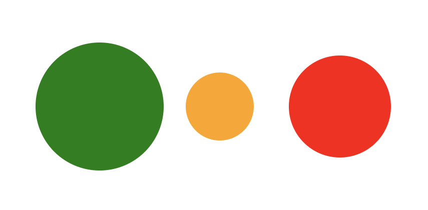

layout: true class: center, middle, inverse --- # Datavisualisering --- layout: false .left-column[ ### Hva? ] .right-column[ ## Visuell kommunikasjon Visualisering er kommunikasjon gjennom visuelle virkemidler. ] --- layout: false .left-column[ ### Hva? ] .right-column[ ## Visuell kommunikasjon Visualisering er kommunikasjon gjennom visuelle virkemidler. ] .right-column[ - Animasjoner & Transisjoner - Fargekoding - Fotografi og video - Kroppsspråk - Piktografi & Bokstaver ] --- layout: false .left-column[ ### Hva? ] .right-column[ ## Datavisualisering En undergren av visuell kommunikasjon hvor målet er å formidle betydning av data gjennom et visuelt medium. ] --- layout: false .left-column[ ### Hva? ] .right-column[ ## Datavisualisering En undergren av visuell kommunikasjon hvor målet er å formidle betydning av data gjennom et visuelt medium. ] .right-column[ - Grafer - Figurer - Infographics ] --- layout: false .left-column[ ### Hva? ] .right-column[ ## Datavisualisering En undergren av visuell kommunikasjon hvor målet er å formidle betydning av data gjennom et visuelt medium. ] .right-column[ - Grafer - Figurer - Infographics ] .right-column[ Gjerne ved å bruke visuell kommunikasjon, som feks fargekoding og animasjoner. ] --- layout: false .left-column[ ### Hva? ### Hvorfor? ] .right-column[ ## Er datavisualisering viktig? Mennesker er flinke til å tolke visuell informasjon. Vi ser kjapt forskjell i - ...farge - ...størrelse - ...form - ...orientering ] --- layout: false .left-column[ ### Hva? ### Hvorfor? ] .right-column[ ## Er datavisualisering viktig? Mennesker er flinke til å tolke visuell informasjon. Vi ser kjapt forskjell i - ...farge - ...størrelse - ...form - ...orientering ] .right-column[ Men vi er ganske dårlige til å se sammenhenger i rå data. ] --- layout: false .left-column[ ### Hva? ### Hvorfor? ] .right-column[ <table class="wikitable" style="text-align: center; margin-left:auto; margin-right:auto;" border="1" > <caption>Anscombe's quartet</caption> <tbody> <tr> <th colspan="2">I</th> <th colspan="2">II</th> <th colspan="2">III</th> <th colspan="2">IV</th> </tr> <tr> <td>x</td> <td>y</td> <td>x</td> <td>y</td> <td>x</td> <td>y</td> <td>x</td> <td>y</td> </tr> <tr> <td>10.0</td> <td>8.04</td> <td>10.0</td> <td>9.14</td> <td>10.0</td> <td>7.46</td> <td>8.0</td> <td>6.58</td> </tr> <tr> <td>8.0</td> <td>6.95</td> <td>8.0</td> <td>8.14</td> <td>8.0</td> <td>6.77</td> <td>8.0</td> <td>5.76</td> </tr> <tr> <td>13.0</td> <td>7.58</td> <td>13.0</td> <td>8.74</td> <td>13.0</td> <td>12.74</td> <td>8.0</td> <td>7.71</td> </tr> <tr> <td>9.0</td> <td>8.81</td> <td>9.0</td> <td>8.77</td> <td>9.0</td> <td>7.11</td> <td>8.0</td> <td>8.84</td> </tr> <tr> <td>11.0</td> <td>8.33</td> <td>11.0</td> <td>9.26</td> <td>11.0</td> <td>7.81</td> <td>8.0</td> <td>8.47</td> </tr> <tr> <td>14.0</td> <td>9.96</td> <td>14.0</td> <td>8.10</td> <td>14.0</td> <td>8.84</td> <td>8.0</td> <td>7.04</td> </tr> <tr> <td>6.0</td> <td>7.24</td> <td>6.0</td> <td>6.13</td> <td>6.0</td> <td>6.08</td> <td>8.0</td> <td>5.25</td> </tr> <tr> <td>4.0</td> <td>4.26</td> <td>4.0</td> <td>3.10</td> <td>4.0</td> <td>5.39</td> <td>19.0</td> <td>12.50</td> </tr> <tr> <td>12.0</td> <td>10.84</td> <td>12.0</td> <td>9.13</td> <td>12.0</td> <td>8.15</td> <td>8.0</td> <td>5.56</td> </tr> <tr> <td>7.0</td> <td>4.82</td> <td>7.0</td> <td>7.26</td> <td>7.0</td> <td>6.42</td> <td>8.0</td> <td>7.91</td> </tr> <tr> <td>5.0</td> <td>5.68</td> <td>5.0</td> <td>4.74</td> <td>5.0</td> <td>5.73</td> <td>8.0</td> <td>6.89</td> </tr> </tbody> </table> ] --- layout: false .left-column[ ### Hva? ### Hvorfor? ] .right-column[ ## Statistikk Det er fort fristende å bruke statistikk til å tolke data. Kanskje spesielt hvis du er komfortabel med programmering. ] --- layout: false .left-column[ ### Hva? ### Hvorfor? ] .right-column[ ## Statistikk Det er fort fristende å bruke statistikk til å tolke data. Kanskje spesielt hvis du er komfortabel med programmering. ] .right-column[ De 4 datasettene har identiske statistiske nøkkelverdier - Avg X: 9 - Spredning X: 11 - Avg Y: 7.5 - Spredning Y: 4.125 - Korelasjon: 0.816 - Lineær regresjon: `y = 3 + 0.5x` ] --- layout: false .left-column[ ### Hva? ### Hvorfor? ] .right-column[ ## Visualisering Hvis vi visualiserer datasettene ved å plotte dem i grafer, får vi et ganske annet bilde av ting. ] --- layout: false .left-column[ ### Hva? ### Hvorfor? ] .right-column[ ## Visualisering Hvis vi visualiserer datasettene ved å plotte dem i grafer, får vi et ganske annet bilde av ting. ] .right-column[  ] --- layout: false .left-column[ ### Hva? ### Hvorfor? ] .right-column[ ## Visualisering Når vi reduserer informasjon i et forsøk på å forstå sammenhenger kommer vi fort i trøbbel. ] .right-column[ Datavisualisering hjelper oss til å formidle mer informasjon på en enklere måte så behovet for å redusere informasjonen ikke er like stort. ] --- layout: false .left-column[ ### Hva? ### Hvorfor? ] .right-column[ ## Visualisering Når vi reduserer informasjon i et forsøk på å forstå sammenhenger kommer vi fort i trøbbel. ] .right-column[ Datavisualisering hjelper oss til å formidle mer informasjon på en enklere måte så behovet for å redusere informasjonen ikke er like stort. ] .right-column[ Mange analytiske oppgaver blir enklere med hjelp av visualisering: - sammenligning - fastslå kausalitet - finne sammenhenger/likheter - kategorisering - finne trender - finne avvik ] --- layout: false .left-column[ ### Hva? ### Hvorfor? ### Hvordan? ] .right-column[ ## Riktig visualisering God datavisualisering handler om god kommunikasjon. ] --- layout: false .left-column[ ### Hva? ### Hvorfor? ### Hvordan? ] .right-column[ ## Riktig visualisering God datavisualisering handler om god kommunikasjon. ] .right-column[ Hvilken kommunikasjon ønsker du å legge til rette for? - Utforsking og sammenligning - Forklare eller forstå - Underholdning - Overtalelse ] --- layout: false .left-column[ ### Hva? ### Hvorfor? ### Hvordan? ] .right-column[ ## Riktig visualisering God datavisualisering handler om god kommunikasjon. ] .right-column[ Hvilken kommunikasjon ønsker du å legge til rette for? - Utforsking og sammenligning - Forklare eller forstå - Underholdning - Overtalelse ] .right-column[ Når du vet hva du ønsker å kommunisere er det enklere å velge rett visualisering 👍 ] --- layout: false .left-column[ ### Hva? ### Hvorfor? ### Hvordan? ] .right-column[ ## Linjediagram (https://beta.observablehq.com/@mbostock/d3-index-chart)  Bra for: Forstå trender og utvikling over tid ] --- layout: false .left-column[ ### Hva? ### Hvorfor? ### Hvordan? ] .right-column[ ## Stolpediagram (https://beta.observablehq.com/@mbostock/d3-bar-chart)  Bra for: Sammenligning av mengder/målinger ] --- layout: false .left-column[ ### Hva? ### Hvorfor? ### Hvordan? ] .right-column[ ## Kakediagram  Bra for: Veldig få ting 😅 ] --- layout: false .left-column[ ### Hva? ### Hvorfor? ### Hvordan? ] .right-column[ ## Sunburstdiagram (https://beta.observablehq.com/@mbostock/d3-sunburst)  Bra for: Utforske og forstå fordeling av mengder ] --- layout: false .left-column[ ### Hva? ### Hvorfor? ### Hvordan? ] .right-column[ ## Scatterplot (https://beta.observablehq.com/@mbostock/d3-scatterplot)  Bra for: Finne avvik ] --- layout: false .left-column[ ### Hva? ### Hvorfor? ### Hvordan? ] .right-column[ ## Boxplot (https://bl.ocks.org/mbostock/4061502)  Bra for: Formidle usikkerhet ] --- layout: false .left-column[ ### Hva? ### Hvorfor? ### Hvordan? ] .right-column[ ## Historiefortelling Vi har sett mange enkeltvisualiseringer, men der datavisualisering virkelig skinner er når det brukes til å formidle et budskap sammen med andre virkemidler. ] --- layout: false .left-column[ ### Hva? ### Hvorfor? ### Hvordan? ] .right-column[ ## Historiefortelling Vi har sett mange enkeltvisualiseringer, men der datavisualisering virkelig skinner er når det brukes til å formidle et budskap sammen med andre virkemidler. ] .right-column.small[ - http://www.r2d3.us/visual-intro-to-machine-learning-part-1/ - https://static.scientificamerican.com/sciam/assets/Image/saw0717Gsci31_d.png - https://www.theguardian.com/us-news/ng-interactive/2017/dec/20/bussed-out-america-moves-homeless-people-country-study - http://www.datasketch.es/september/code/nadieh/ - https://pudding.cool/2017/03/hamilton/index.html ] --- layout: false .left-column[ ### Hva? ### Hvorfor? ### Hvordan? ### D3 ] .right-column[ ## D3 — Data Driven Documents http://d3js.org/ Veldig mye av det dere har sett til nå har vært laga med et rammeverk som heter D3. ] --- layout: false .left-column[ ### Hva? ### Hvorfor? ### Hvordan? ### D3 ] .right-column[ ## D3 — Data Driven Documents http://d3js.org/ Veldig mye av det dere har sett til nå har vært laga med et rammeverk som heter D3. ] .right-column[ D3 er et JavaScript rammeverk for å lage datavisualiseringer på web. Alt fra statiske grafer til interaktive artikler. ] --- layout: false .left-column[ ### Hva? ### Hvorfor? ### Hvordan? ### D3 ] .right-column[ ## D3 — Data Driven Documents http://d3js.org/ Veldig mye av det dere har sett til nå har vært laga med et rammeverk som heter D3. ] .right-column[ D3 er et JavaScript rammeverk for å lage datavisualiseringer på web. Alt fra statiske grafer til interaktive artikler. ] .right-column[ Det er veldig populært og har eksistert lenge, så det har blitt en slags de facto standard for datavisualisering med en stor community bak seg. ] --- layout: false .left-column[ ### Hva? ### Hvorfor? ### Hvordan? ### D3 ] .right-column[ ## D3 — Data Driven Documents http://d3js.org/ Veldig mye av det dere har sett til nå har vært laga med et rammeverk som heter D3. ] .right-column[ D3 er et JavaScript rammeverk for å lage datavisualiseringer på web. Alt fra statiske grafer til interaktive artikler. ] .right-column[ Det er veldig populært og har eksistert lenge, så det har blitt en slags de facto standard for datavisualisering med en stor community bak seg. ] .right-column[ Og det skal dere få lære litt om i dag. ] --- layout: false .left-column[ ### Hva? ### Hvorfor? ### Hvordan? ### D3 ] .right-column[ ## D3 Kjernen i D3 er å koble sammen data med HTML eller SVG (ofte omtalt som DOM). ] --- layout: false .left-column[ ### Hva? ### Hvorfor? ### Hvordan? ### D3 ] .right-column[ ## D3 Kjernen i D3 er å koble sammen data med HTML eller SVG (ofte omtalt som DOM). ] .right-column.small[ ~~~javascript [ { name:"Ireland", pop:6378 }, { name:"Tanzania", pop:3407 }, { name:"Norway", pop:5084 } ] ~~~ .center[⇩ ⇩ ⇩ ⇩ ⇩ ⇩ ⇩ ⇩ ⇩ ⇩ ⇩ ⇩ ⇩ ⇩] ~~~html <svg height="300" width="600"> <circle cx="100" cy="150" r="64" style="fill:green" /> <circle cx="220" cy="150" r="34" style="fill:orange" /> <circle cx="340" cy="150" r="51" style="fill:red" /> </svg> ~~~ .center[⇩ ⇩ ⇩ ⇩ ⇩ ⇩ ⇩ ⇩ ⇩ ⇩ ⇩ ⇩ ⇩ ⇩]  ] --- layout: false .left-column[ ### Hva? ### Hvorfor? ### Hvordan? ### D3 ] .right-column[ ## Join `index.html`: ~~~html <svg id="minSVG" width="600" height="300"></svg> ~~~ `index.js`: ~~~javascript let data = [ { name:"Ireland", pop:6378 }, { name:"Tanzania", pop:3407 }, { name:"Norway", pop:5084 } ] ~~~ ] --- layout: false .left-column[ ### Hva? ### Hvorfor? ### Hvordan? ### D3 ] .right-column[ ## Join `index.html`: ~~~html <svg id="minSVG" width="600" height="300"></svg> ~~~ `index.js`: ~~~javascript let data = [ { name:"Ireland", pop:6378 }, { name:"Tanzania", pop:3407 }, { name:"Norway", pop:5084 } ] // Her binder vi hvert datum i datasettet vårt // til et circle-element i #minSVG let circles = select("#minSVG") .selectAll("circle") .data(data, d => d.name); ~~~ ] --- layout: false .left-column[ ### Hva? ### Hvorfor? ### Hvordan? ### D3 ] .right-column[ ## Enter `index.js`: ~~~javascript let data = [ { name:"Ireland", pop:6378 }, { name:"Tanzania", pop:3407 }, { name:"Norway", pop:5084 } ] // Her binder vi hvert datum i datasettet vårt // til et circle-element i #minSVG let circles = select("#minSVG") .selectAll("circle") .data(data, d => d.name); ~~~ ] --- layout: false .left-column[ ### Hva? ### Hvorfor? ### Hvordan? ### D3 ] .right-column[ ## Enter `index.js`: ~~~javascript let data = [ { name:"Ireland", pop:6378 }, { name:"Tanzania", pop:3407 }, { name:"Norway", pop:5084 } ] // Her binder vi hvert datum i datasettet vårt // til et circle-element i #minSVG let circles = select("#minSVG") .selectAll("circle") .data(data, d => d.name); // Be om alle nye elementer let newItems = circles.enter(); ~~~ ] --- layout: false .left-column[ ### Hva? ### Hvorfor? ### Hvordan? ### D3 ] .right-column[ ## Enter `index.js`: ~~~javascript let data = [ { name:"Ireland", pop:6378 }, { name:"Tanzania", pop:3407 }, { name:"Norway", pop:5084 } ] // Her binder vi hvert datum i datasettet vårt // til et circle-element i #minSVG let circles = select("#minSVG") .selectAll("circle") .data(data, d => d.name); // Be om alle nye elementer let newItems = circles.enter(); newItems .append("circle") // legger til en <circle> .style("fill", "#ff8800") .attr("cx", (d, i) => 50 + i * 100) .attr("cy", 150) .attr("r", (d, i) => d.pop / 100); ~~~ ] --- layout: false .left-column[ ### Hva? ### Hvorfor? ### Hvordan? ### D3 ] .right-column[ ## Thinking in Joins `index.js`: ~~~javascript //Join let circles = select("svg") .selectAll("circle") .data(data); ~~~ ] --- layout: false .left-column[ ### Hva? ### Hvorfor? ### Hvordan? ### D3 ] .right-column[ ## Thinking in Joins `index.js`: ~~~javascript //Join let circles = select("svg") .selectAll("circle") .data(data); let newItems = circles.enter(); let allItems = circles; let oldItems = circles.exit(); ~~~ ] --- layout: false .left-column[ ### Hva? ### Hvorfor? ### Hvordan? ### D3 ] .right-column[ ## Thinking in Joins `index.js`: ~~~javascript //Join let circles = select("svg") .selectAll("circle") .data(data); let newItems = circles.enter(); let allItems = circles; let oldItems = circles.exit(); //Enter newItems.append("circle").attr("r", 1); //Update allItems.attr("r", d => d.value); //Exit oldItems.remove() ~~~ ] --- layout: false .left-column[ ### Hva? ### Hvorfor? ### Hvordan? ### D3 ] .right-column[ ## Thinking in Joins `index.js`: ~~~javascript //Join let circles = select("svg") .selectAll("circle") .data(data); let newItems = circles.enter(); let allItems = circles; let oldItems = circles.exit(); //Enter newItems.append("circle").attr("r", 1); //Update allItems.attr("r", d => d.value); //Exit oldItems.remove() ~~~ ] .right-column[ Dette utgjør sammen det generelle oppdateringspatternet til D3: **Join, Enter, Update & Delete** ] --- layout: false .left-column[ ### Hva? ### Hvorfor? ### Hvordan? ### D3 ] .right-column[ ## En start Dette er en liten intro til de helt grunnleggende konseptene i D3. ] --- layout: false .left-column[ ### Hva? ### Hvorfor? ### Hvordan? ### D3 ] .right-column[ ## En start Dette er en liten intro til de helt grunnleggende konseptene i D3. ] .right-column[ D3 inneholder veldig mange ting, mange fler ting enn vi rekker å gå gjennom i dag. Men vi håper at denne lille smaken på D3 gjør at du får nok i bagasjen til å utforske litt på egenhånd. ] --- layout: false **Oppgaver:** https://github.com/bekk/intro-til-d3 * Hver oppgave er en selvstendig mappe med `README.md` og fasit * Start med nr 0, følg instruksjonene i `README.md` * Instruktørene kommer til å gå gjennom løsningen på de første oppgavene etter passende tid * Det du ikke rekker kan du gjøre på egenhånd senere